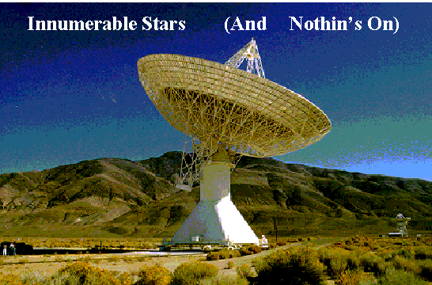

| Feature Article - December 1997 |
| by Do-While Jones |
If Bruce Springsteen is frustrated because his cable system has "57 Channels (And Nothin's On)", imagine how the people who have been looking for signs of extra-terrestrial life for 40 years feel.

What drives people to try to make contact with extra-terrestrial life? The one-word answer is, "evolution."
Evolutionist Carl Sagan said,
As soon as conditions were favorable, life began amazingly fast on our planet. I have used this fact to argue that the origin of life must be a highly probable circumstance; as soon as conditions permit, up it pops!1
He believes,
1. There are enormous numbers of Earth-like planets, each stocked with enormous numbers of species, and
2. In much less than the stellar evolutionary lifetime of each planetary system, at least one of those species will develop high intelligence and technology.2
We must point out that there isn't a shred of physical evidence to support these beliefs (except for the dead aliens and flying saucer wreckage hidden in Area 51 by our government ;-) ).
The theory of evolution is simply the creation myth of the secular humanist religion. As such, belief in it could be protected by the Constitution. But if evolutionists admitted that the theory of evolution is a religious belief, they would not be allowed to indoctrinate school children with it. So, they have tried to disguise their religion as science.
They have chosen the rules, and now they have to live by them. By claiming the theory of evolution to be "scientific" rather than "religious", they open it up to scientific criticism. If one is going to claim that life pops up as soon as conditions permit, and that, "There are enormous numbers of Earth-like planets, each stocked with enormous numbers of species," good scientists have every right and responsibility to ask for proof.
Of course, there is no proof. That's why evolutionists have been using huge radio telescopes, similar to the one shown above, to find radio signals that can support their claims. (This particular antenna is east of US 395, near Big Pine. You can see if from the highway.)
You may have heard that planets have been discovered orbiting stars outside our solar system. That's an exaggeration. Astronomers have found that the spectrum of light from some stars has some frequency modulation on it. This, they assume, is due to Doppler shift. This Doppler shift, they think, is caused by a massive planet orbiting the star (rather than an internal imbalance). A planet large enough to make a star wobble would have to be too big and too close to the star to support life. But since they "know" that a few stars have big planets, they assume these stars also have smaller planets that could support life.
The 27 February, 1997, issue of Nature Magazine (which certainly isn't a creationist publication) contained an article by Dr. David Gray of the University of Western Ontario, Canada, that refutes the widely publicized claim that there is a planet orbiting 51 Pegasus. Dr. Gray says, "the star is pulsating in just the way needed to mimic the signature of a planet in orbit around the star."3
Despite the fact that existence of other planets is merely conjecture, you often read statements like this one by Frank Drake.
Planets are commonplace, and life may be as well. It seems only reasonable to conclude that intelligent life will also be widespread.4
Dr. Frank Drake is the president of the Search for ExtraTerrestrial Intelligence (SETI) Institute, so one can understand why he is likely to overstate the case. He is well known for proposing the Drake Equation.
The Drake Equation gives a means for estimating how many communicating civilizations may be out there. The results can vary widely, depending on the optimism of the numbers you yourself plug in.5
Most religions have an apocalyptic myth that describes the "end of the world." Evolutionists are no exception. Evolutionists tend to believe that whenever a civilization has evolved to the point where it has the technology to destroy itself, it will. In the words of one evolutionist,
The Milky Way galaxy contains over 400 billion stars (and is only one of billions of other galaxies). Could it be that ours is the only planet where life arose? Perhaps. Or maybe life is common, but too often destroys itself as technology becomes too powerful to handle. ... It is not known how likely it is for life to develop on a suitable planet. Once life does exist, however, it is quite evident from our own evolutionary history that it is quite adaptable and tenacious. The jury is still out, however, on how long species survive once they have developed intelligence and powerful technology.6
Technology, they believe, is deadly. It causes civilizations to destroy themselves. But, they hope, at least one of those other extraterrestrial civilizations may have managed to get through the deadly technological stage without destroying itself, and evolved into a benevolent, super-intelligent race that is searching for civilizations such as ours, to rescue us before we blow ourselves to bits.
The search for extraterrestrial life is, for some people, really a search for a savior. Jews are looking for another kind of savior. Christians already have one. Eastern religions find salvation in meditation and enlightenment. None of these groups need to look for an extraterrestrial savior. Evolutionists are the only ones who need to look outside our solar system for a savior. That's why there are Associated Press stories like this one:
In 2001, Carol Robinson and her colleagues from the Unarius Academy of Science will travel to an exotic Caribbean location. There they plan to greet an incoming spaceship from the planet Myton. So that earthly humans can evolve, Unarius Academy members believe the 1,000 residents of Myton will arrive ready to build a "power tower" -- a massive structure that will generate all the planet's energy. Unlike the 39 members of the Heaven's Gate cult, members of the Unarius Academy do not advocate suicide. But they believe a spaceship will drop to Earth and help them resurrect the submerged continents of Atlantis and Lemuria. ...
Charles Spiegel, 76, a former psychology professor at San Diego State University, now directs the Unarius Academy in El Cajon, near San Diego, California. ... Spiegel and other academy members insist their beliefs are a science, not a cult or religion.7
Jews, Christians, and Buddhists may all have intellectual curiosity than produces some moderate interest in discovering intelligent life elsewhere. Evolutionists, on the other hand, are desperately driven to find extraterrestrial life so that they can justify teaching their religious beliefs as "science", and so that they can find a savior who will rescue the human race from annihilation by unrestrained technology.
| Quick links to | |||
|---|---|---|---|
| Science Against Evolution Home page |
Back issues of Disclosure (our newsletter) |
Web Site of the Month |
Topical Index |
Footnotes:
1 Carl Sagan,
"The Origin of Life in a Cosmic Context,"
Origins of Life, vol. 5, 1974, pp. 497-505
2
http://planetary.org/hot-top-d-indefense.html
3
http://www.nature.com/Nature2/serve?SID=6415602&CAT=Corner&PG=Update/update214.html
4
http://www.contact-themovie.com/cmp/int-drake.html
5
http://www.contact-themovie.com/cmp/drake.html
6
Ibid.
7
http://www.cninews.com/Search/CNI.0787.html